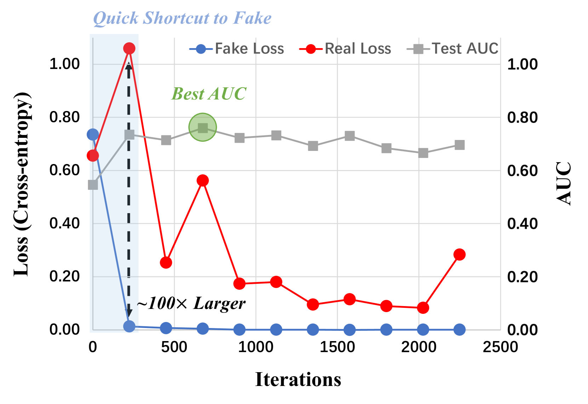
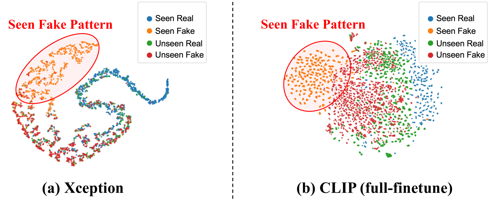
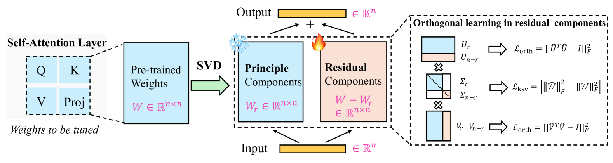
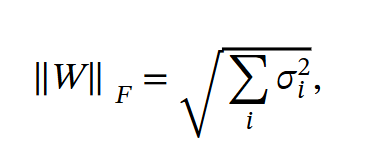
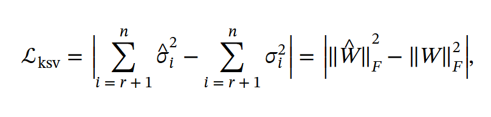
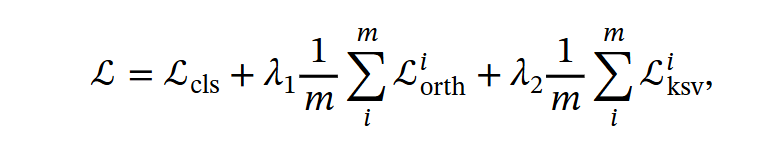
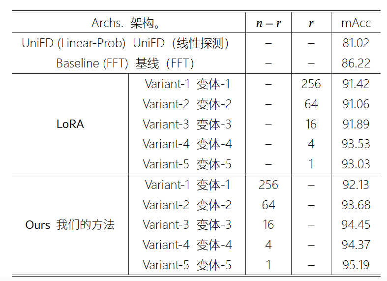
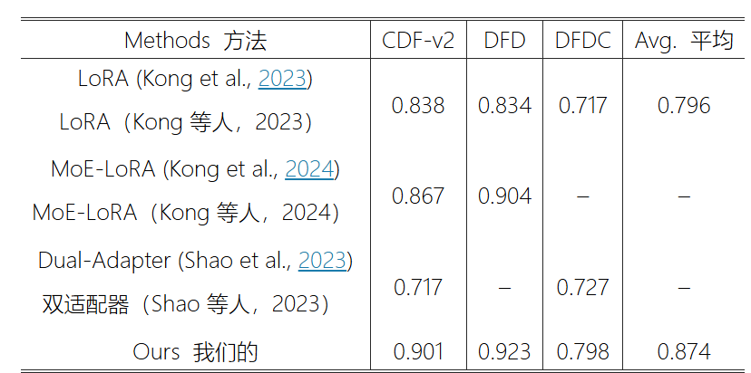
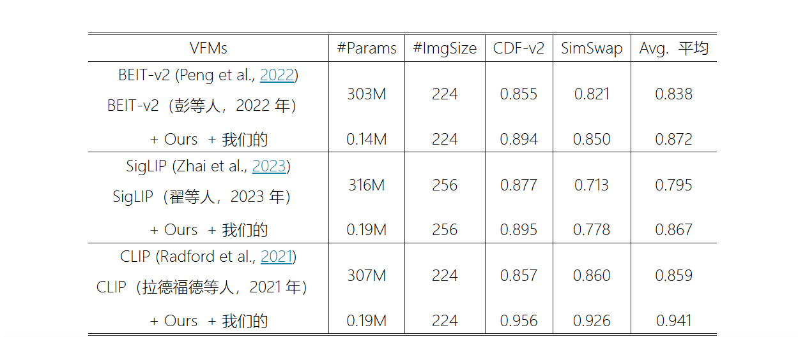
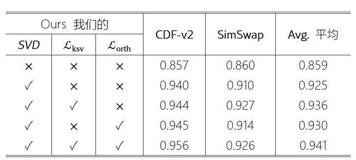

作品 · HTML 版
我的阅读笔记：正交子空间分解：面向可泛化 AI 生成图像检测
我的阅读笔记：正交子空间分解：面向可泛化 AI 生成图像检测
论文原文：Orthogonal Subspace Decomposition for Generalizable AI-Generated Image Detection
- 论文的背景：
当下的检测器普遍把伪造检测当做一种类似于猫还是狗的特闲识别的二元分类任务，具体来说：让基于深度神经网络的标准二元分类器预判测试图像在推理过程中是伪造图像的概率，来区分真实图像与伪造图像。问题是这种检测器在伪造生成方法分布近似的训练集与测试集上表现良好，但是，面对未见过的伪造方式升成的伪造图像，检测效果大打折扣--即泛化能力有限。
- 分析该问题产生原因：
2.1第一层原因：
伪造检测器在训练过程中会快速的过拟合训练集中有限的伪造模式：

在这张图中充分展示了在训练迭代中，朴素检测器快速拟合并且训练集中伪造与真实数据拟合损失减小的事实。
2.2第二层原因
这很可能是因为现有 AIGI 检测数据集通常包含有限且同质的伪造类型，而真实样本之间则表现出显著更高的多样性和差异性，例如不同类别和场景。
所以检测器学习到的特征往往以伪造特征主导：

这种图像展示无论哪种视觉基础模型的检测器，学习的特征中已见过的伪造图像与其他图像t_SNE差距最大。以此证明学习的特征以训练集中伪造图像为主。
2.3第三层原因：
通过主成成分分析（PCA）对模型特征空间中的信息可视化，具体而言：对模型特征空间中不同主成分计算方差解释率。结果发现朴素检测器的特征空间高度受限且秩次低，仅需两个主成分即可捕获全部信息，从而导致泛化能力受限。意思就是检测器学习的特征空间，特征纬度低，特征信息少，效率低。
- 解决思路：
整合视觉基础模型（VFMs）中的预训练知识，这些模型能提供更高秩的特征表示，从而扩展低秩特征空间以缓解过拟合。然而，直接微调 VFM（即使是 CLIP）可能会破坏其原有的丰富表征特征空间，导致特征空间再次陷入低秩状态：
所以设计了新方法：面向可泛化 AIGI 检测的高效正交建模。具体而言，我们采用奇异值分解（SVD）构建两个正交子空间。通过冻结主成分并调整剩余成分，我们在保留预训练知识的同时学习与伪造相关的模式。

3.1 SVD分解
某个线性层的预训练权重W，维度R d1*d2，分解该权重：
𝑊W=UΣV⊤
由于U∈ℝd1×d1,V∈ℝd2×d2分别是包含左、右奇异向量的正交矩阵，Σ∈ℝd1×d2只有奇异值的对角矩阵。由于视觉基础模型的线性层通常具有相同的输入和输出维度，我们在后续讨论中考虑 d1=d2=n情况下的奇异值分解。
3.2获取权重;为了获取预训练权重矩阵的秩为 r 的近似，我们仅保留前 r 个奇异值及其对应的奇异向量：W≈Wr=UrΣrVr
其中 Ur∈ℝn×r 、 Σr∈ℝr×r 和 Vr∈ℝn×r 。我们在训练过程中保持 Wr 冻结，以保留从大规模数据中学习到的主导性预训练知识。
3.3残差分量
定义为预训练权重与 SVD 近似值之间的差值，用于学习针对伪造图像的特定表征：
ΔW=W−Wr=Un−rΣn−rVn−r⊤
Un−r∈ℝn×(n−r) , Σn−r∈ℝ(n−r)×(n−r) , Vn−r∈ℝn×(n−r) 。需要特别指出的是， ΔW 表示与剩余奇异值分解相关的可学习形式，反映了对原始权重矩阵的轻微修改或扰动。
3.4训练
我们仅优化 ΔW，同时保持 Ur、Σr和 Vr固定不变。这种实现方式确保模型能够通过 SVD 近似保留处理真实图像的能力，并通过权重矩阵的平凡残差分量适应深度伪造检测任务。
为了鼓励 ΔW捕捉真实与虚假之间既有用又有意义的差异，确保优化 ΔW不会改变整体权重矩阵 W的特性（即尽可能减少对预训练权重中真实信息的影响）至关重要。因此，我们提出了两个约束条件来实现这一目标，具体如下：
3.4.1正交约束
我们保持每个奇异向量之间的正交性，以维持用于学习真实/虚假特征的正交子空间。
ℒorth=||U^TU−I||^2 F+||V^TV−I||^2 F,
其中U^∈ℝn×n表示将Un与Un−r沿行方向拼接，V^∈ℝn×n表示将 Vr与 Vn−r沿行方向拼接，||.||F表示弗罗贝尼乌斯范数， I是适当维度的单位矩阵。
3.4.2奇异值约束
奇异值可理解为一种缩放因子，它影响着对应奇异向量的幅值大小。奇异值与待分解权重矩阵的 Frobenius 范数之间存在如下关系：

其中sigmoid i表示对应权重矩阵的第 i个奇异值。
为了最大程度减少真实知识的影响，我们约束优化后的权重矩阵W^的奇异值，使其与原始权重矩阵W的奇异值保持一致：

其中 W^表示W优化后的权重， |.|表示绝对值。请注意，该正则化将控制 ΔW在优化过程中的重要性，以防止对真实/虚假特征的学习过拟合。
3.4.3损失函数
训练模型的整体损失函数结合了分类损失 ℒcls （例如，用于二分类的交叉熵损失）和正交性正则化损失。

其中 λ1,λ2 是平衡对应正则化项重要性的超参数， m 表示应用我们方法的预训练权重矩阵数量。实际应用中，我们将该方法适配到 VFM 所有 Transformer 层中自注意力模块的线性层上，以充分利用其丰富且充分学习的真实分布。
- 解决方法效果
4.1与LoRA微调效果对比：


原因：利用奇异值分解（SVD）显式构建出预训练知识与伪造特征的两个正交子空间，确保原有预训练知识不会发生扭曲，从而实现更优的泛化性能。
4.2与其他视觉模型兼容性

4.3渐进式提升
基线模型（无模块）的平均 AUC 为 0.859，而单独添加 SVD 后性能提升至 0.925（+6.6%），凸显了其通过正交特征分解隔离伪造伪影的有效性。进一步集成奇异值约束（ ℒksv ）和正交约束（ ℒorth ）后，性能分别优化至 0.936 和 0.930 AUC，而两者协同作用（SVD + ℒksv + ℒorth ）达到了峰值性能（0.941 AUC）。这些结果不仅表明 SVD 是性能提升的主要驱动力，也揭示了 ℒksv 和 ℒorth 在进一步优化泛化性能方面的互补优势。
